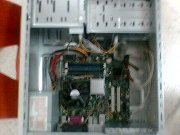
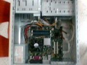

Un gran trabajo de equipo fue la instalación del GNU/Linux en las computadoras que se usaron en el taller que se impartió con motivo del primer aniversario del GULAG, tarea en la que nos enfrentamos a un gran número de retos.

 

La primer faena le tocó a libereco, mibito y samy, quienes el jueves comenzaron con la labor, habiéndonos reportado que no pudieron instalar el Debian, cuestión que nos pareció muy rara, pues sabemos bien que Debian es una de las distribuciones con mayor compatibilidad y confiabilidad. Por alguna razón desconocida no llegaba a la interfaz gráfica.
Cuando el viernes nos integramos más voluntarios, nos encontramos con un tipo de equipo de cómputo que en la tarjeta madre tenía integrado el video y la red; en el que las versiones más recientes de las mejores distribuciones no lograban mostrar las X's; algunas tronaban y se reiniciaba el equipo; otras mostraban rayas o patrones repetidos, algo sumamente extraño.(1)
Cerca de las 4 de la tarde, probamos la versión Live del Gentoo Linux 2006.1, con la que sí llegaba a las X's a un Gnome completo. Procedimos entonces a hacer una instalación a partir de los binarios del CD(2), sincronizamos el portage e instalamos el paquete del que se iba a hablar en el taller, el Inkscape(3).
Estando listo el primer equipo, se procedió a clonar ese disco duro para todos los demás equipos. Mientras tanto, en paralelo, RIVE hacía instalaciones de una versión de Mandriva que ya traía el Inkscape en su DVD.
La clonación la hicimos de forma manual, dando comandos en la terminal. En un equipo conectábamos el disco duro a clonar y el que iba a recibir la copia; arrancábamos desde el CD con un GNU/Linux ligero que llegaba a la terminal(4).
Estos son los comandos para clonar una partición raíz de Gentoo Linux; a partir de que se tiene el origen en /dev/hdc3 y el destino en /dev/hda3:
# mount /dev/hdc3 /mnt/origen
# mkfs.ext3 /dev/hda3
# mount /dev/hda3 /mnt/destino
# cd /mnt/origen
# tar -cv bin/ boot/ dev/ etc/ home/ lib/ media/ mnt/ opt/ proc/ root/ root/ sbin/ sys/ usr/ var/ | tar -C /mnt/destino -x
# umount /mnt/origen
# umount /mnt/destino
Terminamos cerca de las 11 pm con 16 equipos intalados. Rive dijo como moraleja, siempre revisa los equipos para talleres una semana antes del día del evento.
Hubo más contingencias de las que menciono aquí, pero eso no fue impedimento para pasar el rato con buen humor y ánimos para lograr la meta. Grabé tres videos con el celular; en el segundo verán la dramática expresión de baldo al aparecerle un pánico de kernel:
Agradezco al ingeniero, baldo, libereco, mgjc, mibito, rive, samy y varios compañeros más por apoyarnos en la preparación de estos equipos.
- ¡Y vaya que probamos todo! Debian, Knoppix, Slackware, Suse, RedHat, etc. Sólo el live de Gentoo y ese DVD en particular de Mandriva, reconocían y configuraban correctamente la tarjeta de video.
- Hubiera sido algo muy prolongado hacer la instalación compilando todos los paquetes del Gentoo Linux. Simplemente al ver que el kernel genérico funcionaba correctamente, usamos el asistente de instalación y tomó los paquetes binarios del CD.
- El Inkscape no venía compilado en el CD. Así que habilité mi portátil como servidor de paquetes, vía rsync. La primer computadora tomó las aplicaciones de la portátil, no desde internet.
- La tarjeta madre del tipo de equipo que más había, sólo tenía conexión para una cinta IDE. Afortunadamente algunos equipos eran de otro modelo con dos conexiones para cintas IDE.